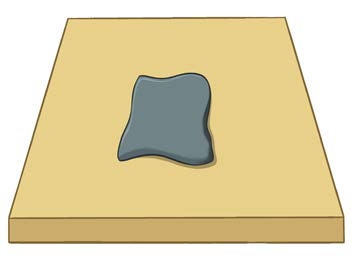
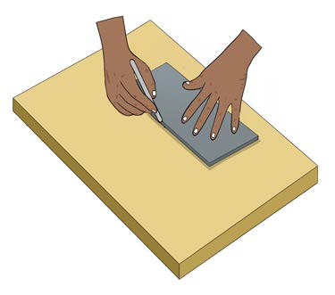

(iii) Ubao;
(iv) Kipande cha karatasi; na
(v) Kisukumio.
Hatua za kufinyanga kwa njia ya bapa
(i) Chagua aina ya umbo unalotaka kufinyanga;
(ii) Weka udongo kwenye kibao kisha sukuma kama chapati kwa kutumia kisukumio au kifaa kinachofanana kama vile chupa;
(iii) Sukuma bapa lenye unene unaolingana, kama inavyoonekana katika Kielelezo namba 2;


(iv) Kata vipande vya bapa kulingana na umbo ulilochagua, kama inavyoonekana katika Kielelezo namba 3;
